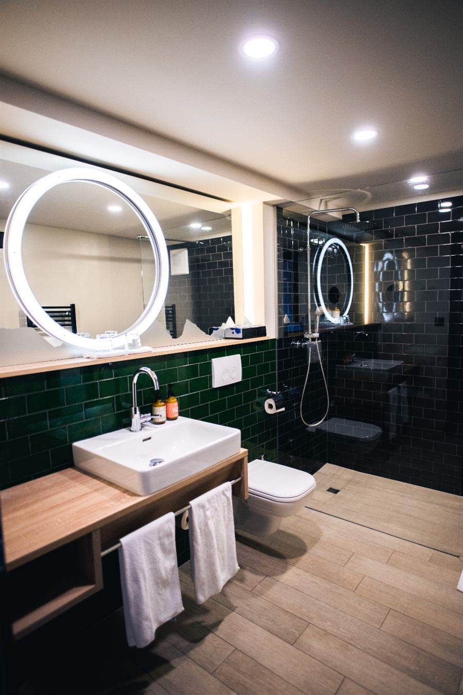

Recovery
Rhinoplasty Recovery: An Honest Week-by-Week Timeline
The splint comes off in a week. The nose takes a year. Here is what actually happens in between, without the marketing gloss.
Rhinoplasty has the longest gap between "healed" and "finished" of any facial procedure. You will look socially presentable in about two weeks and the nose will not be its final shape for a year or more.
Knowing that in advance changes the experience considerably. Most rhinoplasty distress is not caused by complications — it is caused by patients judging a result at six weeks that was never going to be finished at six weeks.
Days 1–3: the worst of it
You will have a splint on the bridge and possibly soft internal splints. Breathing through the nose will be blocked — this is swelling and packing, not damage. Expect to mouth-breathe, which makes the throat dry and sleep poor.
Swelling and bruising around the eyes peak around day two or three. Bruising is usually worse if bone work was done. Sleeping propped up at 30–45 degrees genuinely reduces both. Cold compresses on the cheeks, never pressed on the nose itself.
Pain is generally milder than people expect — more pressure and congestion than sharp pain.
Days 4–7: turning the corner
Bruising starts moving down and yellowing. Swelling begins to settle. Most people stop needing anything stronger than paracetamol.
The splint usually comes off between day six and day eight, along with any external sutures. This is the moment most patients find hardest: the nose that emerges is swollen, often upturned, sometimes asymmetrical, and looks nothing like the final result. That is normal and it is temporary.
Weeks 2–4: socially presentable
Most bruising has resolved and most people return to office work by the end of week two. Residual swelling is still obvious to you and largely invisible to others.
The tip stays swollen and firm — it has the thickest soft tissue and drains slowest. Numbness of the tip and upper lip is common and resolves over months.
No glasses resting on the bridge if bone work was done, typically for four to six weeks. Tape them to the forehead or use contacts. No contact sport, no heavy lifting, no blowing the nose forcefully.
Months 2–4: the plateau that worries people
Roughly 70–80% of swelling is gone. Progress slows dramatically and this is where patients most often panic — the nose looks a bit wide, a bit heavy in the tip, and it has stopped visibly changing week to week.
This is also when minor asymmetries are most apparent, because swelling rarely resolves perfectly evenly. Almost all of it settles. Judging the result here is premature.
Months 6–18: the actual result
The last 10–20% of swelling resolves slowly, mostly in the tip, and thicker skin takes longer than thin skin. Definition sharpens gradually.
Most surgeons will not consider revision before twelve months, and often eighteen for thick-skinned or revision cases, because operating into unsettled tissue makes outcomes worse and unpredictable.
What is normal, and what is not
Normal: swelling that fluctuates with heat, salt, alcohol and time of day; numbness; firmness in the tip; a small amount of bloody discharge in the first days; feeling that one side breathes better than the other early on.
Call the clinic: fever, spreading redness, worsening pain after day three or four, heavy bleeding that does not stop with pressure and elevation, or sudden visual changes. These are uncommon but they are the things not to wait on.
Things that genuinely help
- Sleep elevated for the first two weeks
- Keep salt low in the first fortnight — it visibly worsens swelling
- No alcohol for two weeks; it dilates vessels and prolongs bruising
- No smoking, at all, before or after — it directly impairs healing of the skin flap
- Sun protection on the nose for at least six months; new scar tissue pigments easily
- Take photographs monthly in the same light, so you can see progress you cannot feel
The part worth internalising
Rhinoplasty rewards patience more than any other aesthetic operation. The nose at three months is not the nose at fifteen months, and a large proportion of people who are unhappy at three months are happy at a year without anything further being done.
Medical disclaimer. This article is general education, not medical advice. It cannot account for your individual anatomy, medical history or medications, and it is not a substitute for an in-person consultation with a qualified practitioner. If you are considering a procedure, book an assessment.
Keep Reading
More from the journal
How to Choose a Plastic Surgeon in India: 9 Checks That Actually Matter
Marketing budgets and follower counts tell you nothing about surgical safety. These are the checks that do — and the red flags worth walking away from.
Laser Treatments on Indian Skin: What Fitzpatrick IV–VI Changes
Most laser protocols were written for pale European skin. On deeper skin tones the same settings can cause the exact pigmentation you came in to treat.

Gynecomastia or Chest Fat? How to Tell the Difference
Liposuction alone leaves the firm disc behind the nipple untouched — which is why so many men need a second operation after their first.